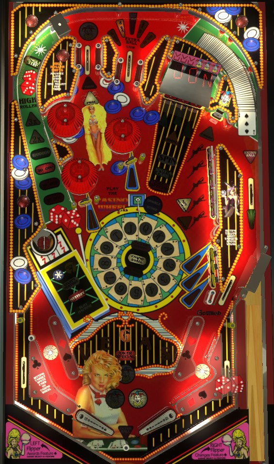

Not to be confused with Vegas (Game Plan, 1979), a cocktail pinball table.
If you are more of a flow player, you'll want to learn how to combo the left orbit repeatedly without missing. This shot is worth up to 1,000,000 points, which can be multiplied by up to 5 by completing the upper right drop targets first. If you are more of a control player, hit yellow standup targets to light them; lighting them all awards a letter in Vegas, and spelling Vegas lights the Cashier target in the upper right for up to 8,000,000 points for the rest of the ball. Multiball can only be earned from Mystery or Select a Feature; all scores are double in multiball. Ignore the Jackpot and Super Jackpot, as they are entirely luck based.
There are 2 top lanes that a plunged ball can find. The left top lane awards a Joker, and the right top lane scores and advances the lit value. The value starts at 10,000, increases 10,000 each time it is collected, advances to Extra Ball after 50,000 has been scored, and resets to 10,000 when Extra Ball is scored. The extra ball is lit for free at the start of the final ball if your score or play time has been low. Extra ball scores 1,000,000 points in competition/novelty play.
A short plunge will come down the right side lane and fall into the right in lane. Triggering the rollover switch in the right side lane behind the targets will qualify the left orbit's Combo value, but it's possible to plunge short enough that the ball enters the playfield without even hitting this switch.
A full shot to the left orbit goes up, across the top of the game, down the right side lane, and feeds the right in lane. The switch in the right side lane scores and advances the lit value in the left orbit. The value of a full left orbit shot is just 10 points when not lit; this increases to 10,000, then 20,000, then 40,000, then 70,000, then 1,000,000 points. Hitting any switch in the game that is not part of the left orbit's path resets the left orbit value. On easy settings, the left orbit is always worth 1,000,000 starting with the 6th loop. On hard settings, the left orbit value will alternate between 1,000,000 and 70,000 until you miss.
The left orbit value can be multiplied by completing the 5-bank of drop targets in the upper right. Each completion of the full bank advances the left orbit multiplier in the sequence 2x-3x-5x. This multiplier only affects the value of a full left orbit shot and is reset when the ball drains.
At the start of the game, one Vegas letter is spotted. To light additional Vegas letters, light the 5 yellow standup targets around the playfield. There are 2 targets attached to each of 2 pop bumpers, and 3 other targets in the lower right. Hit an unlit target to make it flash; hit a flashing target to light it solidly. Depending on game settings, you may need to hit all targets twice, all targets once, or only some targets once to complete a set. Each letter in Vegas is worth 100,000 points in end of ball bonus. Spelling Vegas- or, completing the targets one more time after spelling Vegas, on hard settings- lights the Cashier target in the upper right. The Cashier target is lit for the rest of the ball; hitting it when lit scores 2,000,000 the first time, 4,000,000 the second time, 6,000,000 the third time, then a repeatable 8,000,000 for every hit starting with the 4th. Draining the ball with the Cashier target lit unlights the Cashier target and also unlights all Vegas letters.
The three red alphanumeric digits in the back right of the playfield indicate what cards are spotted by the three red standup targets in the upper right. Hitting a target lights the corresponding card and awards 1,000 points times the card's value. T (ten), J (jack), Q (queen), and K (king) score 10,000 points. A (ace) scores 11,000 points. The * scores 30,000 points and lights the lower left saucer for a *. The icon that looks vaguely like a bunny or a classic TV with an antenna scores 1,000 points and lights one Joker. If 100X is lit from a Mystery award or Select-a-Feature, the center target only will score 100 times its normal value. If the red standup targets are lit for Spin, hitting any target will re-randomize which cards are assigned to each target. Pop bumpers and slingshots toggle whether or not Spin is lit. Shooting the lower left saucer also triggers a Spin.
Card progress is reset at the start of each ball, though either 1 or 2 cards are spotted for free at the start of each ball. Collecting any 5 consecutive cards as depicted on the Casino Wheel lights the lane behind the right targets for extra ball; this extra ball can only be scored once per ball in play. Collecting all 13 cards on the Wheel scores an instant Special.
Collecting a 7 card, even if the 7 was already lit, lights the lower left saucer for Lucky 7. Making the saucer when Lucky 7 is lit will in turn light one of the 7s on the backglass near the score display. Lighting all seven 7s qualifies the Queen Special, where any red standup target lit with a Q (Queen) scores a Special for the entire rest of the ball.
Extra balls and Specials score 1,000,000 points in competition/novelty play.
Pop bumpers and slingshots alternate whether the lower left saucer is lit for Slot Machine or Mystery. Collecting 3 Jokers from the upper left top lane or the red standup targets will unlight both Slot Machine and Mystery, qualifying Select-a-Feature instead.
In Slot Machine, the alphanumeric display imitates the reels of a classical slot machine. This is a luck-based feature that cannot be influenced. Earning 3 Cherries scores the Jackpot, which is worth 1,000,000 points and increases by 100,000 every game it is not won. Earning three 7s scores the Super Jackpot, which is worth 20,000,000 points and increases by 100,000 every game it is not won. Any other combination scores 50,000, 250,000, or 500,000 points.
The Mystery has a long list of awards it can give.
During Select-a-Feature, you have 5 seconds to choose what feature you want. The right flipper changes the displayed feature, and the left flipper locks it in. Possible features earned from Select-a-Feature are generally all of the Mystery features, with one addition: Double or Nothing, which is a coin flip change to either double your entire current score or reset your entire score back to 0 points.
Lighting 3 Stars on the backglass starts a Super feature. To begin, you are asked if you want to play a Hard feature or an Easy feature. If you choose Hard, you then get the option to play for either Double Your Score or 2 Extra Balls. If you choose Easy, you play for either 1,000,000 points or Light Extra Ball. In a Super feature, you have 20 seconds to hit whatever targets are lit. Easy features usually pick just one of the yellow or red standup targets; Hard features usually pick 3 or 4 yellow targets, all 3 red targets, or the Cashier target.
I assume that in a multiplayer game, one of the Super feature award options can be changed to Catch-Up instead, given the text that appears next to the three Stars on the backglass. Earning Catch-Up instantly increases your score to be equal to the current leader's score.
Hitting a red standup target with a * displayed lights the lower left saucer for a *. One would think that making the lower left saucer when * is lit would light one backglass Star, but this does not seem to be the case. I don't actually know what it means when the left saucer is lit for a *.
Vegas has a conventional in/out lane setup. In lanes are slanted outward toward the edge of the table rather than being vertical. The right in lane has a slight jog in its structure to slow the ball down, intended to make it easier to shoot the left orbit repeatedly as a combo. The star rollovers in the in lanes score only 30 points. Out lanes score 100,000 points. There is a center post between/below the flippers.
If you have just made a full orbit shot, the ball should be fed into the right in lane. If for any reason the ball chokes up at the in lane entrance and falls down the out lane, the game will usually award an "insurance" ball save, allowing you to continue play.
End of ball bonus is scored as 100,000 points per lit Vegas letter- that's it. There is no multiplier or mid-ball bonus collect.